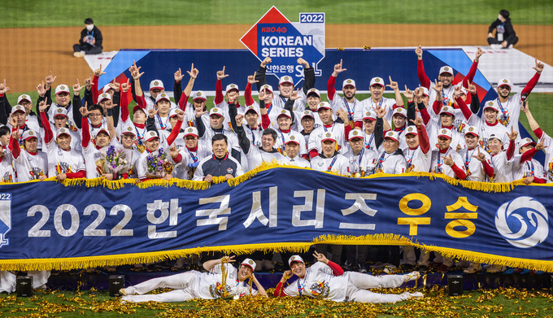

ssg랜더스는 신세계그룹의 계열사인 이마트가 운영하는 KBO 리그 프로야구단. 연고지는 인천광역시. 팀명이 된 SSG는 신세계그룹의 온라인 쇼핑몰 사업을 전담하고 있는 SSG.COM에서 따왔다. 인천을 연고로 하는 프로야구단으로는 삼미 슈퍼스타즈, 청보 핀토스, 태평양 돌핀스, 현대 유니콘스, SK 와이번스의 뒤를 잇는 6번째 팀이다.
팀의 상징색은 빨간색이다. 신세계그룹에서는 ‘승리를 염원하는 열정’과 ‘강렬한 카리스마’를 담은 붉은색이라는 의미로 카리스마틱 레드라는 이름을 붙였다. 'lander(착륙선)'의 의미[9] 를 기반으로 하여 우주선을 그린 엠블럼을 사용한다. 이마트 측에서는 "우주선이 미지의 개척지에 착륙하는 이미지를 메인 엠블럼에 넣었는데, 이는 신세계 그룹이 세상에 없는 프로야구단을 선보여, 새로운 승리의 역사를 개척하겠다는 의지를 담은 것"이라는 설명을 덧붙였다.
